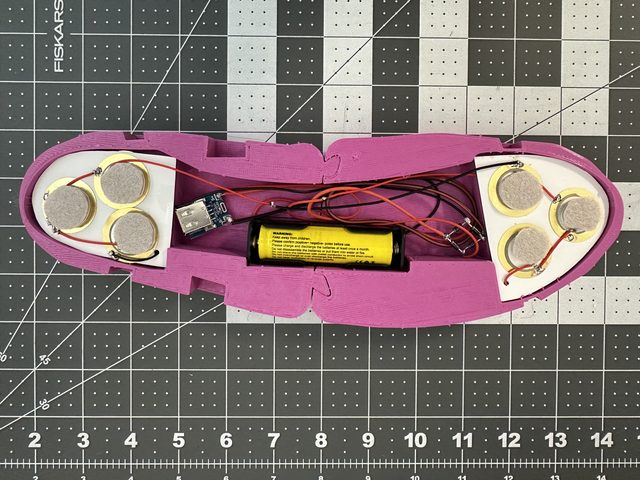
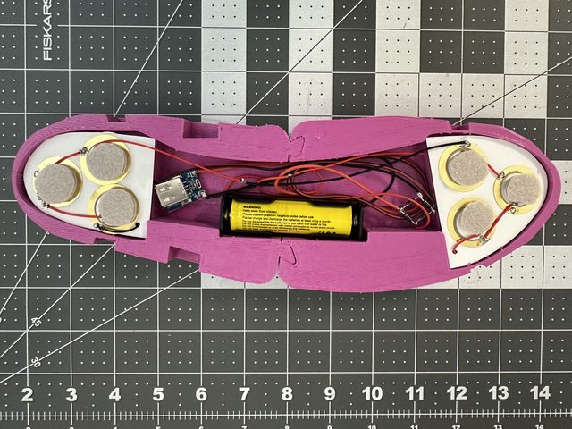
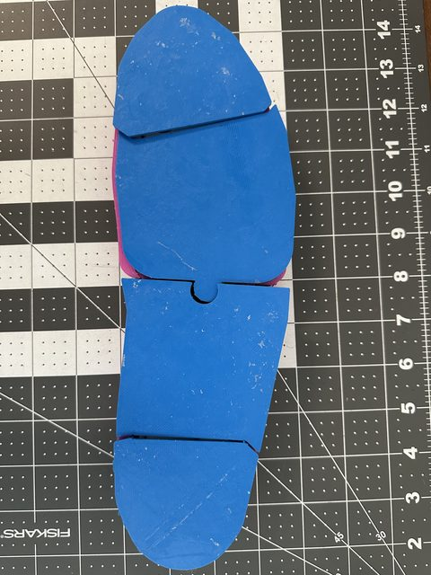
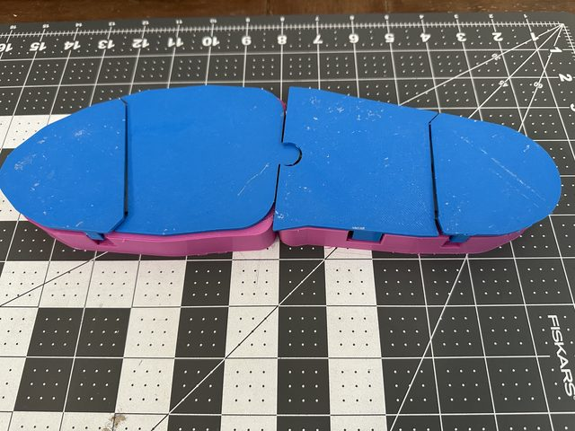
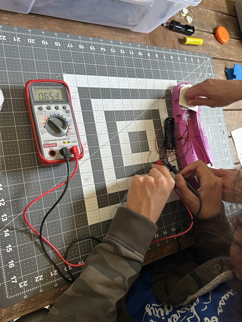

Kinetic Energy Harvesting Shoe Sole
Rotary Young Innovators 3D Printing Challenge finalist · 2025
A 3D-printed shoe sole with embedded piezoelectric discs that harvests the energy of walking into a rechargeable battery.
TODO: pick the good images out of originals/slides-media/ and move them into this project's img folder.





Outcome
The prototype measurably stored harvested energy: 14.48 V peak open-circuit output under simulated footsteps, and a 0.009–0.013 V battery rise over a 30-minute walk, confirmed across two independent battery discharge experiments.
Why
Kinetic energy from human movement is abundant and almost entirely wasted. Capturing even a fraction of it is a step away from fossil-fuel reliance — and it rewards walking.
My role
Co-designed the project with Kevin Xia: sole CAD, electrical design, and the experimental protocol.
How it works
The printed sole houses 12 × 27 mm piezoelectric discs feeding a full-wave Schottky bridge rectifier (1N5819), a 134N3P lithium charging/protection module, and an 18650 cell with a 5 V boost converter for USB output. Three experiments measured open-circuit AC voltage, rectified DC voltage, and accumulated battery energy, with energy computed from Joule's law over timed discharge intervals. Iterating from 6 discs in parallel to 12 in series raised output and cut forward voltage drop from 0.7–1.0 V to 0.3–0.4 V.